lorenz_partial_25d_additive_mse_uniform_p50_obsnoise005__lc_sweepProject: Lorenz_INDpartial_N25_D1_NormTrue_T3__JacobianODE
Launched: 2026-04-19T22:25:33Z
Completed: 2026-04-20T06:30:16Z
Outcome: complete_clean
Git: latent-JacobianODE @ 477d6a0
Expected runs: 9
lorenz_partial_25d_additive_mse_uniform_p50_obsnoise005__lc_sweepDescription
Lorenz partial-25 additive coupling, uniform reconstruction loss, obs_noise=0.05, prediction_steps=50 (seq_length=65). 9-run LC sweep. Sibling of the p10 / p30 obsnoise005 sweeps for a prediction-horizon comparison at the harder noise level.
Hypothesis
The p30 obsnoise005 sweep overestimated |λ_min| (obs-space spectrum for run y7938e7x hit -24.6 vs Lorenz -14.57, though λ1 ~= +1.03 vs +0.91 was reasonable). p50 may either (a) help further by giving the rollout more chances to see off-attractor contraction, or (b) make the 25-delay embedding even less favourable by accumulating more observation noise over each 50-step rollout. The companion n_delays sweep at obs_noise=0.05 tests the other side of the same question (whether more delays — not longer rollouts — is the lever).
Success criteria
Swept axes (1): training.lightning.loop_closure_weight
Chosen run (by best_traj_loss): hjklti5a — traj_loss=0.01703, MASE=1.0248, R²=0.9539, LC loss=0.124, epoch=102.0
Swept-axis values at chosen run: training.lightning.loop_closure_weight=1.0e-04
Runs analyzed: 9 (expected 9)
| run_idx | run_id | training.lightning.loop_closure_weight |
best_traj_loss | best_MASE | R² | LC loss | epoch |
|---|---|---|---|---|---|---|---|
| 3 | hjklti5a |
1.0e-04 | 0.01703 | 1.0248 | 0.9539 | 0.124 | 102.0 |
| 1 | vk4vbhca |
1.0e-06 | 0.01830 | 1.0393 | 0.9498 | 0.439 | 113.0 |
| 2 | kp6412b4 |
1.0e-05 | 0.01860 | 1.0335 | 0.9494 | 0.297 | 95.0 |
| 0 | pkbe7md6 |
0 | 0.01942 | 1.0606 | 0.9479 | 0.649 | 77.0 |
| 5 | 43tbffy8 |
0.01 | 0.02256 | 1.1422 | 0.9383 | 0.004 | 159.0 |
| 4 | znnf3h0u |
0.001 | 0.02359 | 1.1615 | 0.9364 | 0.017 | 134.0 |
| 6 | 2fetlgun |
0.1 | 0.03200 | 1.2628 | 0.9127 | 0.000 | 96.0 |
| 7 | 4u7pc8ba |
1 | 0.05489 | 1.6302 | 0.8502 | 0.000 | 30.0 |
| 8 | ubbybv4p |
10 | 0.06665 | 1.9212 | 0.8175 | 0.000 | 47.0 |
| Criterion | Verdict | Note |
|---|---|---|
| Best val traj_loss finite and within ~5× of the p30 obsnoise005 baseline | Unknown | |
| λ_min at best LC closer to -14.57 than p30 achieved (currently ~-24.6 at y7938e7x) | Unknown | |
| No loop-closure explosion (max LC loss at best_tl < 10) | Unknown |
Automated verdicts use simple numeric-threshold parsing and may mis-classify qualitative criteria. The Discussion section below takes precedence.
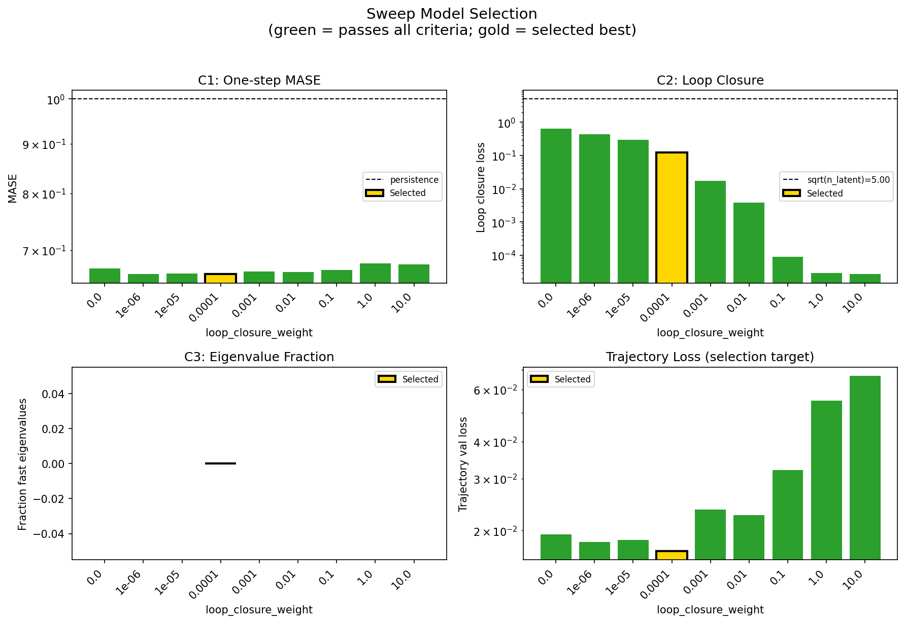
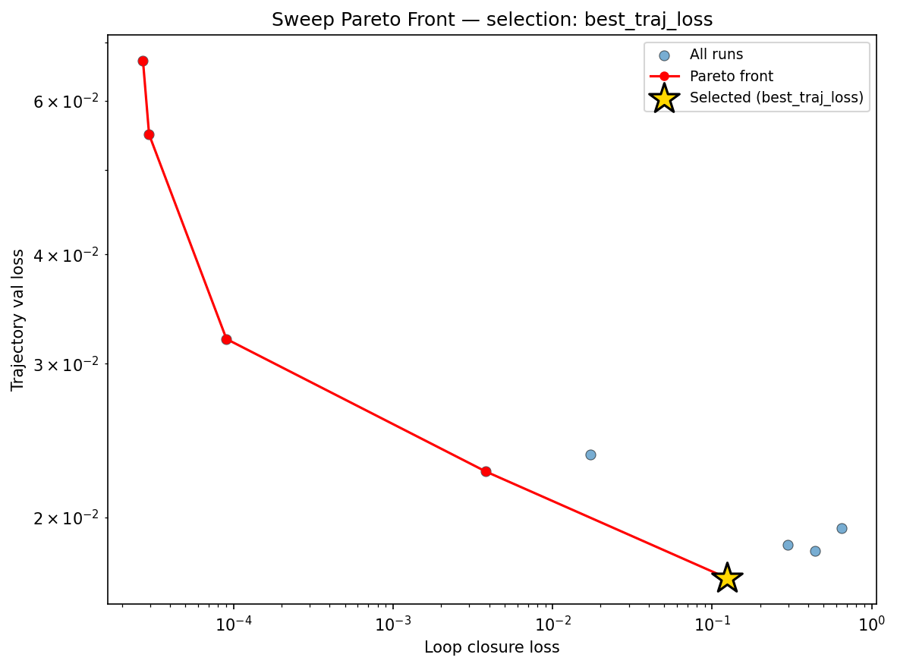
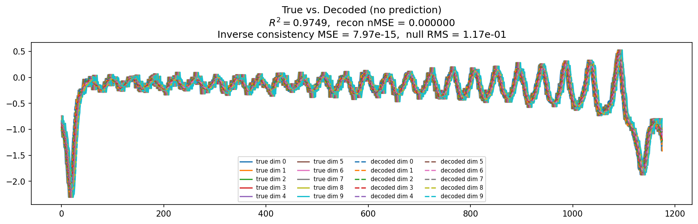
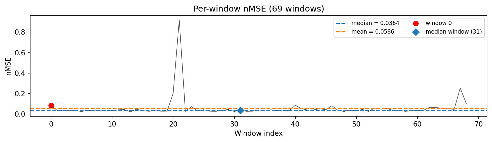
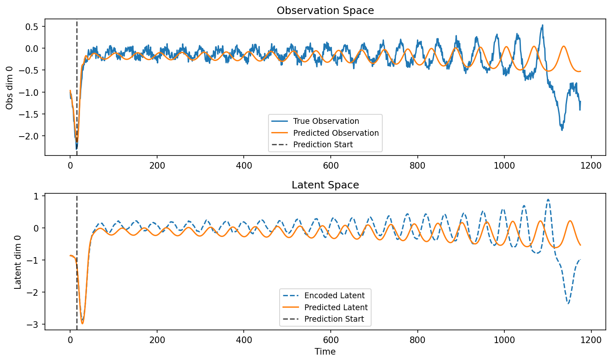
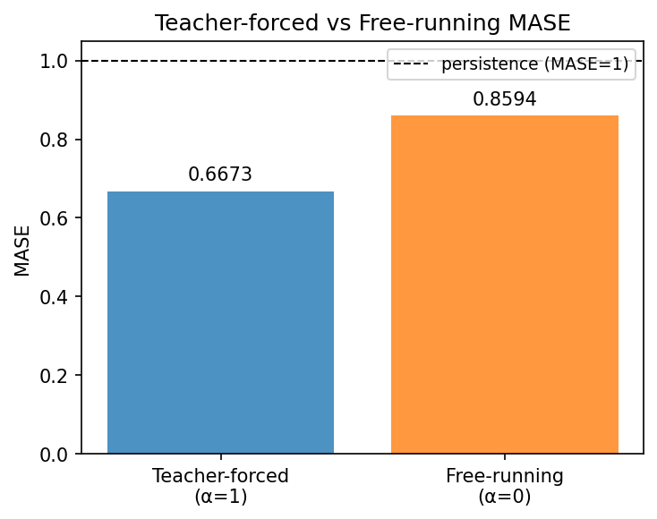
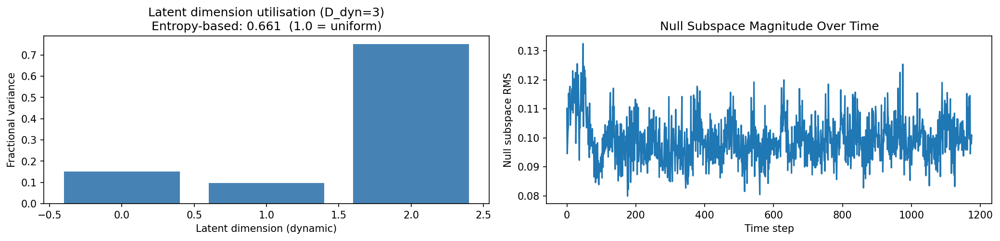
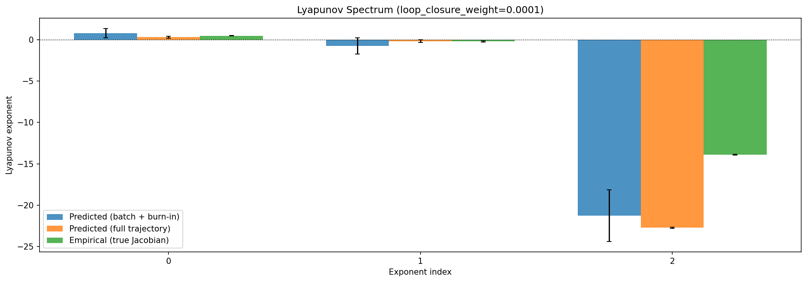
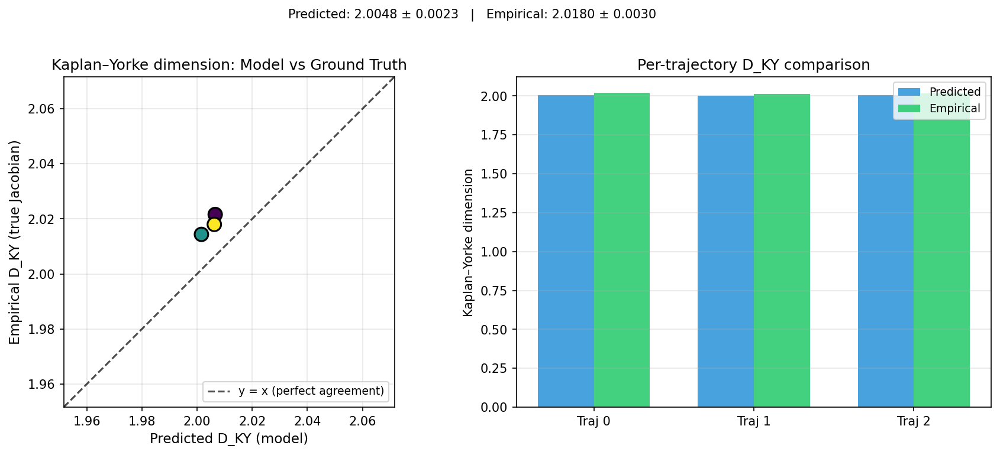
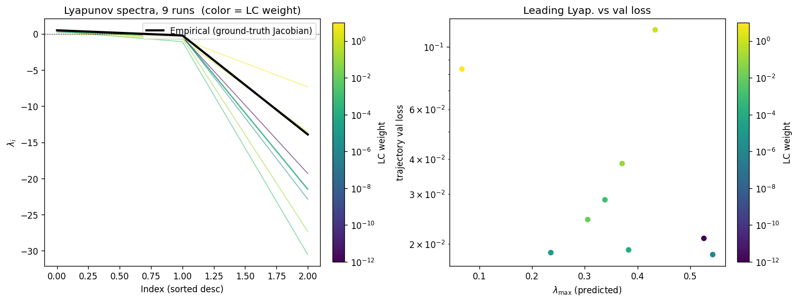
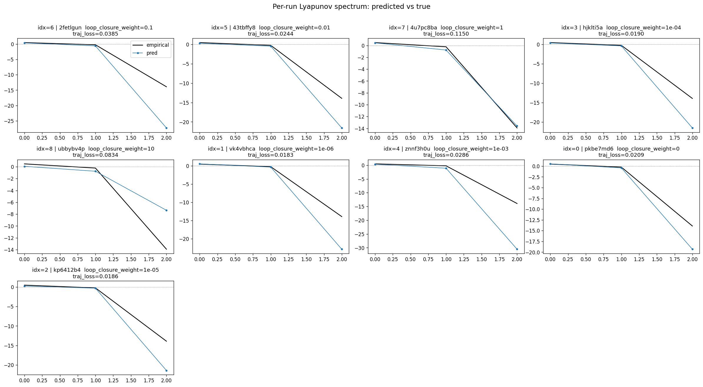
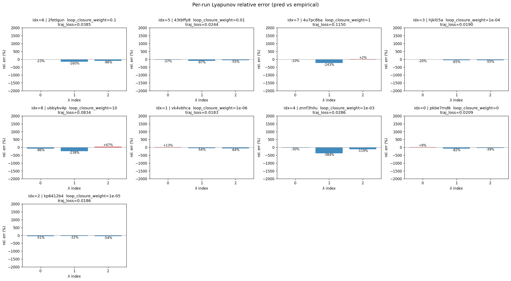
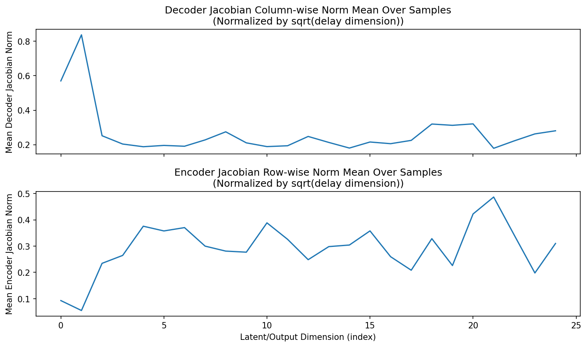
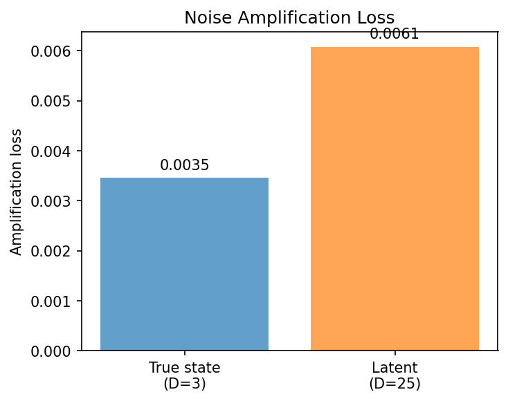
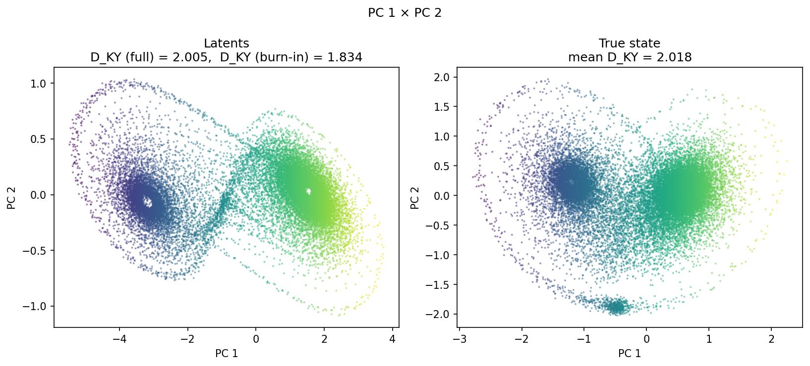
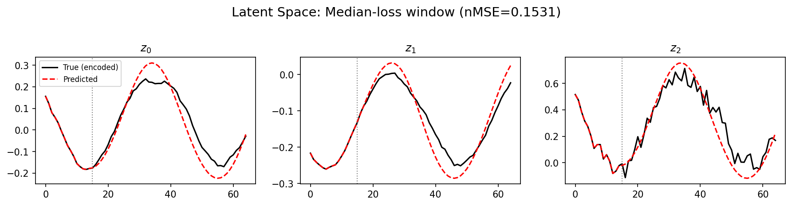
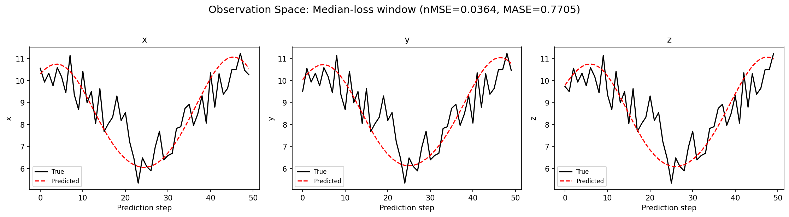
(to be written)
run_analytics stdoutrun_analyticsNo run_id provided — selecting best run from group 'lorenz_partial_25d_additive_mse_uniform_p50_obsnoise005__lc_sweep' ...
Found 9 total runs in JacobianODE/Lorenz_INDpartial_N25_D1_NormTrue_T3__JacobianODE (group=lorenz_partial_25d_additive_mse_uniform_p50_obsnoise005__lc_sweep)
All runs (state, loop_closure_weight, tangent_entropy_weight, kl_dyn_weight):
2fetlgun: state=finished, lc=0.1, te=0.0, kl_dyn=0.0
43tbffy8: state=finished, lc=0.01, te=0.0, kl_dyn=0.0
4u7pc8ba: state=finished, lc=1.0, te=0.0, kl_dyn=0.0
hjklti5a: state=finished, lc=0.0001, te=0.0, kl_dyn=0.0
ubbybv4p: state=finished, lc=10.0, te=0.0, kl_dyn=0.0
vk4vbhca: state=finished, lc=1e-06, te=0.0, kl_dyn=0.0
znnf3h0u: state=finished, lc=0.001, te=0.0, kl_dyn=0.0
pkbe7md6: state=finished, lc=0.0, te=0.0, kl_dyn=0.0
kp6412b4: state=finished, lc=1e-05, te=0.0, kl_dyn=0.0
slurm_timeout_min not found in any run config — falling back to 180 min
Including 2fetlgun (lc=0.1): use_all_runs=True (state=finished)
Including 43tbffy8 (lc=0.01): use_all_runs=True (state=finished)
Including 4u7pc8ba (lc=1.0): use_all_runs=True (state=finished)
Including hjklti5a (lc=0.0001): use_all_runs=True (state=finished)
Including ubbybv4p (lc=10.0): use_all_runs=True (state=finished)
Including vk4vbhca (lc=1e-06): use_all_runs=True (state=finished)
Including znnf3h0u (lc=0.001): use_all_runs=True (state=finished)
Including pkbe7md6 (lc=0.0): use_all_runs=True (state=finished)
Including kp6412b4 (lc=1e-05): use_all_runs=True (state=finished)
Found 9 effectively-done sweep runs:
loop_closure_weight=0.0, tangent_entropy_weight=0.0, kl_dyn_weight=0.0 -> run_id=pkbe7md6
loop_closure_weight=1e-06, tangent_entropy_weight=0.0, kl_dyn_weight=0.0 -> run_id=vk4vbhca
loop_closure_weight=1e-05, tangent_entropy_weight=0.0, kl_dyn_weight=0.0 -> run_id=kp6412b4
loop_closure_weight=0.0001, tangent_entropy_weight=0.0, kl_dyn_weight=0.0 -> run_id=hjklti5a
loop_closure_weight=0.001, tangent_entropy_weight=0.0, kl_dyn_weight=0.0 -> run_id=znnf3h0u
loop_closure_weight=0.01, tangent_entropy_weight=0.0, kl_dyn_weight=0.0 -> run_id=43tbffy8
loop_closure_weight=0.1, tangent_entropy_weight=0.0, kl_dyn_weight=0.0 -> run_id=2fetlgun
loop_closure_weight=1.0, tangent_entropy_weight=0.0, kl_dyn_weight=0.0 -> run_id=4u7pc8ba
loop_closure_weight=10.0, tangent_entropy_weight=0.0, kl_dyn_weight=0.0 -> run_id=ubbybv4p
n_dims=25, n_latent=25, n_dyn=3, dt=0.0150
run=pkbe7md6: DiagnosticMetrics(one_step_mase=0.67001873254776, loop_closure_loss=0.6491894721984863, fast_eigenvalue_fraction=0.0, trajectory_val_loss=0.01941641978919506) (from W&B history)
run=vk4vbhca: DiagnosticMetrics(one_step_mase=0.6612750887870789, loop_closure_loss=0.43891623616218567, fast_eigenvalue_fraction=0.0, trajectory_val_loss=0.018302256241440773) (from W&B history)
run=kp6412b4: DiagnosticMetrics(one_step_mase=0.6620973944664001, loop_closure_loss=0.296695739030838, fast_eigenvalue_fraction=0.0, trajectory_val_loss=0.01860118843615055) (from W&B history)
run=hjklti5a: DiagnosticMetrics(one_step_mase=0.6617680191993713, loop_closure_loss=0.12390018254518509, fast_eigenvalue_fraction=0.0, trajectory_val_loss=0.017032260075211525) (from W&B history)
run=znnf3h0u: DiagnosticMetrics(one_step_mase=0.6654314994812012, loop_closure_loss=0.017304345965385437, fast_eigenvalue_fraction=0.0, trajectory_val_loss=0.023588651791214943) (from W&B history)
run=43tbffy8: DiagnosticMetrics(one_step_mase=0.6650176048278809, loop_closure_loss=0.0038200928829610348, fast_eigenvalue_fraction=0.0, trajectory_val_loss=0.022557280957698822) (from W&B history)
run=2fetlgun: DiagnosticMetrics(one_step_mase=0.6681577563285828, loop_closure_loss=9.042214514920488e-05, fast_eigenvalue_fraction=0.0, trajectory_val_loss=0.03200012817978859) (from W&B history)
run=4u7pc8ba: DiagnosticMetrics(one_step_mase=0.6780920624732971, loop_closure_loss=2.9607088436023332e-05, fast_eigenvalue_fraction=0.0, trajectory_val_loss=0.054885026067495346) (from W&B history)
run=ubbybv4p: DiagnosticMetrics(one_step_mase=0.6769421100616455, loop_closure_loss=2.7110832888865843e-05, fast_eigenvalue_fraction=0.0, trajectory_val_loss=0.06664606928825378) (from W&B history)
Ranking method: best_traj_loss
Best run ID: hjklti5a
Best loop_closure_weight: 0.0001
Best tangent_entropy_weight: 0.0
Best kl_dyn_weight: 0.0
Best traj loss: 0.017032
Criteria applied: ['C1', 'C2', 'C3']
Surviving: 9 / 9
Auto-selected run_id: hjklti5a
======================================================================
PARETO FRONTIER RUNS (5 runs)
======================================================================
Run ID LC Loss Traj Val Loss
------------ -------------- --------------
ubbybv4p 0.000027 0.066646
4u7pc8ba 0.000030 0.054885
2fetlgun 0.000090 0.032000
43tbffy8 0.003820 0.022557
hjklti5a 0.123900 0.017032 <-- selected
======================================================================
RANKING METHOD COMPARISON (over 9 survivors)
======================================================================
Method Run ID LC Loss Traj Val Loss
---------------------- ------------ -------------- --------------
best_traj_loss hjklti5a 0.123900 0.017032 <-- active
pareto_knee 2fetlgun 0.000090 0.032000
geo_rank hjklti5a 0.123900 0.017032
minimax_rank 43tbffy8 0.003820 0.022557
geo_log_score hjklti5a 0.123900 0.017032
minimax_log_score 2fetlgun 0.000090 0.032000
======================================================================
Loading run hjklti5a from JacobianODE/Lorenz_INDpartial_N25_D1_NormTrue_T3__JacobianODE ...
Train dataset shape: torch.Size([24442, 65, 25])
Validation dataset shape: torch.Size([7777, 65, 25])
Test dataset shape: torch.Size([3333, 65, 25])
Train trajectories dataset shape: torch.Size([22, 1176, 25])
Validation trajectories dataset shape: torch.Size([7, 1176, 25])
Test trajectories dataset shape: torch.Size([3, 1176, 25])
Loading checkpoint epoch=102-step=20600.ckpt...
Computing reconstruction ...
Computing MASE ...
Teacher-forced MASE: 0.6673
Free-running MASE: 0.8594
Computing latent utilization ...
Entropy-based utilization: 0.661
Null subspace mean RMS: 9.956779e-02
Computing Lyapunov exponents ...
Computing full-trajectory Lyapunov (3 test trajs, T=1176) ...
Predicted Lyapunov exponents (batch+burn-in, 128 windowed trajs):
λ_1 = +0.7730 ± 0.5632
λ_2 = -0.7545 ± 0.9662
λ_3 = -21.2642 ± 3.0998
Predicted Lyapunov exponents (full-length, 3 test trajs):
λ_1 = +0.2979 ± 0.1150
λ_2 = -0.1888 ± 0.1682
λ_3 = -22.7142 ± 0.0708
Empirical Lyapunov exponents (mean ± std):
λ_1 = +0.4677 ± 0.0259
λ_2 = -0.2173 ± 0.0549
λ_3 = -13.9174 ± 0.0513
Mean KY dim (predicted): 2.005 ± 0.002
Mean KY dim (empirical): 2.018 ± 0.003
Mean KY dim (burn-in): 1.834 ± 0.358
Computing prediction windows ...
Windows: 69 — nMSE min=0.0222, median=0.0364, mean=0.0586, max=0.9187
Computing long trajectory prediction ...
Computing encoder/decoder Jacobians ...
encoder_jacobian: (128, 25, 25)
decoder_jacobian: (128, 25, 25)
Computing amplification loss ...
Amplification loss — True state: 0.003459
Amplification loss — Latent: 0.006079